<!doctype html>
<html lang="en">
<head>
  <meta charset="utf-8">
  <meta name="viewport" content="width=device-width, initial-scale=1">
  <title>arxiv digest — 2026-07-16</title>
  <style>
:root {
  --bg: #ffffff;
  --fg: #1f2328;
  --muted: #59636e;
  --border: #d0d7de;
  --card: #f6f8fa;
  --link: #0969da;
}
body {
  max-width: 980px;
  margin: 0 auto;
  padding: 2rem 1rem 5rem;
  font-family: -apple-system, BlinkMacSystemFont, "Segoe UI", Helvetica, Arial, sans-serif;
  line-height: 1.55;
  color: var(--fg);
  background: var(--bg);
}
a { color: var(--link); }
img { max-width: 100%; height: auto; }
pre, code { background: var(--card); border-radius: 6px; }
pre { padding: 1rem; overflow-x: auto; }
blockquote { border-left: 4px solid var(--border); padding-left: 1rem; color: var(--muted); }
details { margin: 0.6rem 0; }
summary { cursor: pointer; font-weight: 600; }
.paper-figures-scroll {
  display: flex;
  gap: 1rem;
  overflow-x: auto;
  overscroll-behavior-x: contain;
  padding: 0.75rem 0.25rem 1rem;
  margin: 1rem 0 1.25rem;
  border-top: 1px solid var(--border);
  border-bottom: 1px solid var(--border);
  scroll-snap-type: x proximity;
}
.paper-figure-card {
  flex: 0 0 min(260px, 72vw);
  scroll-snap-align: start;
  background: var(--card);
  border: 1px solid var(--border);
  border-radius: 12px;
  padding: 0.55rem;
}
.paper-figure-card img {
  display: block;
  width: 100%;
  max-height: 240px;
  object-fit: contain;
  background: white;
  border-radius: 8px;
}
.paper-figure-caption {
  display: block;
  margin-top: 0.5rem;
  color: var(--muted);
  font-size: 0.85rem;
}
.figure-strip-hint {
  color: var(--muted);
  font-size: 0.9rem;
  margin-bottom: -0.3rem;
}
</style>
  <!-- MathJax: renders $...$ inline math and $$...$$ display math, plus
       \(...\) and \[...\]. Loaded from the official CDN; works offline
       once cached. Configured to skip code/pre blocks so arxiv IDs that
       look like dollar amounts don't get mangled. -->
  <script>
    window.MathJax = {
      tex: {
        inlineMath: [['$', '$'], ['\\(', '\\)']],
        displayMath: [['$$', '$$'], ['\\[', '\\]']],
        processEscapes: true,
        processEnvironments: true
      },
      options: {
        skipHtmlTags: ['script', 'noscript', 'style', 'textarea', 'pre', 'code'],
        ignoreHtmlClass: 'tex2jax_ignore',
        processHtmlClass: 'tex2jax_process'
      }
    };
  </script>
  <script id="MathJax-script" async
    src="https://cdn.jsdelivr.net/npm/mathjax@3/es5/tex-chtml.js"></script>
</head>
<body>
<header style="background-color: #333; color: white; padding: 15px; margin-bottom: 20px;">
  <h1 style="margin: 0; font-size: 24px;">
    <a href="https://ochelpan.github.io/arXiv_clean/" style="color: white; text-decoration: none;">Main</a>
  </h1>
</header>

<h1>Daily arXiv Report</h1>

<hr>
<p>
<a href="index.html">← Index</a>
 · <a href="papers_06.html">← Previous</a>
</p>
<hr>

<h2>Papers 121–124</h2>
<p><a id="paper-2607.12542"></a></p>
<h3 id="effect-of-the-local-field-and-dipole-dipole-interaction-on-the-spontaneous-ordering-of-dipole-moments-in-bismuth-monolayers-with-an-orthorhombic-structure"><a href="http://arxiv.org/abs/2607.12542v1">Effect of the local field and dipole-dipole interaction on the spontaneous ordering of dipole moments in bismuth monolayers with an orthorhombic structure</a></h3>
<p><strong>Authors:</strong> D. V. Ponkratova, I. V. Zagorodnev, V. V. Enaldiev<br>
<strong>Type:</strong> theory · <strong>Category:</strong> statistical mechanics · <strong>PDF:</strong> <a href="https://arxiv.org/pdf/2607.12542v1">https://arxiv.org/pdf/2607.12542v1</a><br>
<strong>Analysis basis:</strong> full PDF text, analyzed in chunks
<strong>Topic relevance:</strong> <code>driven-dissipative phase transition</code> <strong>2/5</strong> · <code>Keldysh / 2PI / non-Gaussian methods</code> <strong>1/5</strong> · <code>analog quantum simulation</code> <strong>1/5</strong> · <code>methods for driven-dissipative</code> <strong>1/5</strong> · <code>spintronics-quantum-optics interface</code> <strong>1/5</strong></p>
<div class="figure-strip-hint">↔ Scroll figures horizontally</div>
<div class="paper-figures-scroll">
<figure class="paper-figure-card">
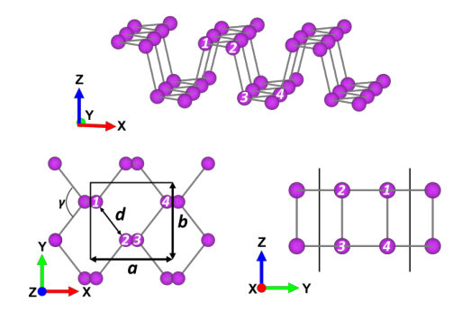
<figcaption class="paper-figure-caption"><b>Fig 1.</b> FIG. 1. Lattice structure of an orthorhombic bismuth mono- layer in the nonpolar (paraelectric) phase. The numbers in- dicate the sublattice sites belonging to one unit cell.</figcaption>
</figure>
<figure class="paper-figure-card">

<figcaption class="paper-figure-caption"><b>Fig 2.</b> FIG. 2. (a, b) Parametric dependences of α on a/d for the boundaries between the nonpolar (paraelectric) and sponta- neously polarized phases with the distributions of dipole mo- ments calculated with the parameters d = 2.8 , b = 4.42 , and (a) α1,2,3,4 ij = αδij and (b) α1,2,3,4 ij given by Eqs. (5)–(8). The black horizontal line corresponds to a = 4.75 from the experiment reported in [5, 13]. The range of relevant α values is shaded in pink. (c) Distributions of dipole moments corre- sponding to the phase boundaries in (a, b).</figcaption>
</figure>
<figure class="paper-figure-card">
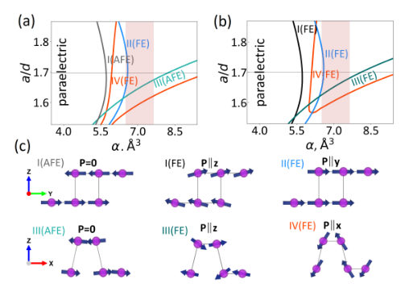
<figcaption class="paper-figure-caption"><b>Fig 3.</b> Figure 2(a) corresponds to the isotropic polarizability α for all sublattices, as for a free atom. At small polar- izabilities α ≲5 Å3, the sublattices have zero dipole mo- ment, which corresponds to the paraelectric phase. By increasing the polarizability at a fixed parameter a/d, it is possible to achieve the intersection of the bound- aries of one of the antiferroelectric or ferroelectric or- ders with the distribution of the spontaneous dipole mo- ment of the sublattices, as shown in the lower insets of Fig. 2. The experimental lattice parameters correspond to the horizontal black line [13], according to which, as α increases, the monolayer first passes into the an- tiferroelectric...</figcaption>
</figure>
<figure class="paper-figure-card">
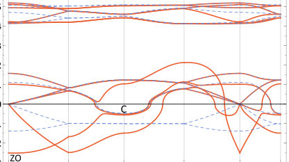
<figcaption class="paper-figure-caption"><b>Fig 4.</b> FIG. 3. (a) Phonon spectrum in the orthorhombic bismuth monolayer obtained from Eq. (11) in the nearest-neighbour approximation disregarding the Born charges (Zs ji = 0) along the path in the Brillouin zone shown in the inset. (b) Same spectrum taking into account the Born charges |Zs xx| = 1.5e at ϵ = 1 (the blue dashed line corresponds to the spectrum in panel (a)). The arrows in the inset indicate the directions of sublattice displacements for the ZO mode at qM = 0 and the C mode at qM = (π/a, π/b).</figcaption>
</figure>
</div>

<p><strong>Summary.</strong> This theoretical work examines how spontaneous electric dipoles can order in orthorhombic bismuth monolayers. By combining local field theory with phonon spectroscopy, the authors predict multiple competing ferroelectric and antiferroelectric phases. The findings highlight that dipole-dipole interactions are crucial in determining which ordered state is thermodynamically favored.</p>
<p><strong>Why it may be interesting.</strong> While focused on condensed matter electrostatics, the study of competing ordered states (FE vs AFE) driven by subtle interactions like dipole-dipole coupling is relevant to understanding complex many-body ground states and symmetry breaking in quantum materials.</p>
<details>
<summary>Detailed structure</summary>
<p><strong>Main problem.</strong> The study investigates the instability of bismuth monolayers with an orthorhombic structure concerning the emergence of spontaneous electric dipole moments, leading to ferroelectric or antiferroelectric ordering.</p>
<p><strong>Main result.</strong> Two complementary theoretical approaches confirm the possibility of multiple competing ferroelectric and antiferroelectric phases in these monolayers. The inclusion of local field and dipole-dipole interactions significantly influences the stability boundaries between these ordered states.</p>
<p><strong>Method.</strong> The research employs two main methods: calculating site dipoles using atomic polarizability under a local Lorentz-Lorenz field, and analyzing the vibrational spectrum for soft optical phonon modes indicative of phase transitions.</p>
<p><strong>Model / system.</strong> The physical system is a bismuth monolayer modeled with an orthorhombic lattice structure. The analysis uses concepts from solid-state physics, including Born effective charges and the full dynamical matrix derived from DFT calculations.</p>
<p><strong>Key observables.</strong> Spontaneous electric polarization (P), soft optical phonon modes (ZO mode for FE, C mode for AFE), atomic dipole moments $\mathbf{p}(s)$, and phase boundaries in parameter space ($\alpha$ vs $a/d$).</p>
<p><strong>Important parameters / regimes.</strong> Lattice parameters ($a, b, d$), atomic polarizability tensors ($\alpha_{ij}$), and the strength of the local electric field.</p>
<p><strong>Assumptions / limitations.</strong> The analysis assumes that any phase transition must be accompanied by a structural transformation breaking the paraelectric symmetry. Force constants are often parameterized using nearest-neighbor approximations.</p>
<p><strong>Figures summary.</strong> Figures illustrate lattice structures, phase boundaries mapping transitions between Paraelectric, AFE I, and FE phases under varying polarizability assumptions. Phonon spectra show mode softening when dipole-dipole interactions are included.</p>
<p><strong>Paper structure.</strong> The paper systematically develops the theoretical framework by first calculating atomic properties (polarizabilities, Born charges) using DFT. It then applies two complementary models—a local field approach and a phonon spectrum analysis—to predict stable ferroelectric/antiferroelectric phases and map their phase boundaries.</p>
</details>
<details>
<summary>Abstract</summary>
<p>Using two complementary approaches, the instability of bismuth monolayers with an orthorhombic structure with respect to the emergence of spontaneous electric dipole moments at the crystal lattice sites has been studied. The first approach, based on determining the dipole moments of lattice sites through the polarizability of bismuth atoms and taking into account the local Lorentz-Lorenz field, suggests the possibility of the existence of several antiferroelectric and ferroelectric phases in orthorhombic bismuth monolayers. Using the second approach, the vibrational spectrum of a nonpolar symmetric lattice has been analyzed, and two types of soft optical modes corresponding to the ferroelectric and antiferroelectric instabilities of the monolayers have been revealed. The relationship of the Born effective charges to the polarization direction in the ferroelectric phase, as well as their role in the reduction of the frequency of the polar optical phonon, which characterizes the lattice deformation in the ferroelectric phase due to the dipole-dipole interaction, has been shown.</p>
</details>
<p><sub><a href="#top">↑ back to top</a></sub></p>

<p><a id="paper-2607.13016"></a></p>
<h3 id="topological-characterization-of-multifold-band-degeneracies-in-altland-zirnbauer-symmetry-classes"><a href="http://arxiv.org/abs/2607.13016v1">Topological characterization of multifold band degeneracies in Altland-Zirnbauer symmetry classes</a></h3>
<p><strong>Authors:</strong> Askar Iliasov, Zoltán Guba, Tsuneya Yoshida, Apoorv Tiwari, Tomáš Bzdušek<br>
<strong>Type:</strong> theory · <strong>Category:</strong> other · <strong>PDF:</strong> <a href="https://arxiv.org/pdf/2607.13016v1">https://arxiv.org/pdf/2607.13016v1</a><br>
<strong>Analysis basis:</strong> full PDF text, analyzed in chunks
<strong>Topic relevance:</strong> <code>Keldysh / 2PI / non-Gaussian methods</code> <strong>1/5</strong> · <code>analog quantum simulation</code> <strong>1/5</strong> · <code>driven-dissipative phase transition</code> <strong>1/5</strong></p>
<div class="figure-strip-hint">↔ Scroll figures horizontally</div>
<div class="paper-figures-scroll">
<figure class="paper-figure-card">
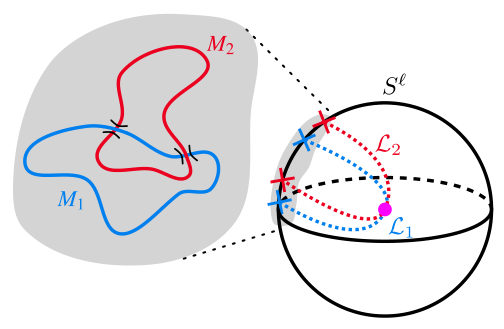
<figcaption class="paper-figure-caption"><b>Fig 1.</b> FIG. 1. A schematic illustration of our approach to topological char- acterization of an 𝑛-fold nodal point in a minimal (i.e., 𝑛-band) model. The nodal point, which lies at the intersection of the loci L1 and L2 of a lower-degree band degeneracy, is enclosed by a sphere 𝑆ℓ, where ℓ+ 1 is the codimension of forming an 𝑛-fold nodal point. We study topological band invariants on the nodal manifolds 𝑀1 = L1 ∩𝑆ℓ</figcaption>
</figure>
<figure class="paper-figure-card">
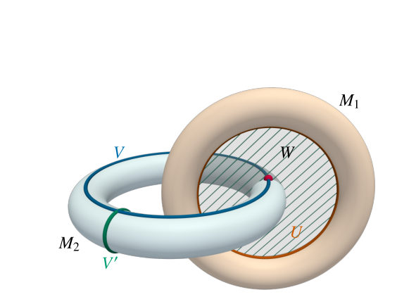
<figcaption class="paper-figure-caption"><b>Fig 2.</b> FIG. 2. A schematic illustration of the linking between 𝑈⊂𝑀1 and 𝑉⊂𝑀2. The linking is defined as the intersection number of a submanifold representing a nontrivial homology class in 𝑀2, which is a circle 𝑉in this case, and the surface 𝑊such that 𝑈is a boundary of 𝑊. The manifold 𝑉′ representing another nontrivial homology class of 𝑀2 is unlinked with 𝑈.</figcaption>
</figure>
<figure class="paper-figure-card">
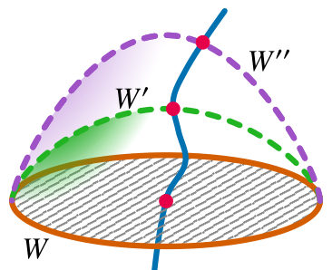
<figcaption class="paper-figure-caption"><b>Fig 3.</b> FIG. 3. The illustration demonstrates the construction of charged manifolds 𝑉𝑗linked with the manifold 𝑈= 𝜕𝑊by varying the sur- faces 𝑊.</figcaption>
</figure>
<figure class="paper-figure-card">
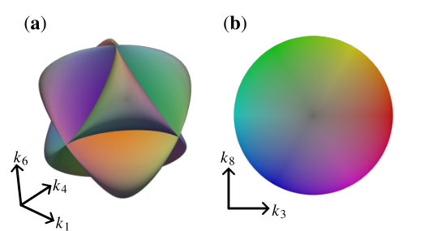
<figcaption class="paper-figure-caption"><b>Fig 4.</b> FIG. 4. (a) Projection of the nodal manifolds 𝑀1 and 𝑀2 in the symmetry class AI [Eqs. (22) and (22)] onto the space spanned by momenta {𝑘1, 𝑘4, 𝑘6}. The manifolds are colored according to the values of the coordinates {𝑘3, 𝑘8} according to the legend in panel (b). Each nodal manifold appears like a Roman surface in panel (a), which corresponds to one of the standard representations of the real projective plane [86]. That the manifolds do not intersect inside 𝑆4 ⊂R5 follows from the distinct coloring of any intersecting sheets. The linking of the two manifolds is not manifest in panel (a); however, it is revealed by the nontrivial Stiefel-Whitney invariants as discussed in the main text.</figcaption>
</figure>
<figure class="paper-figure-card">
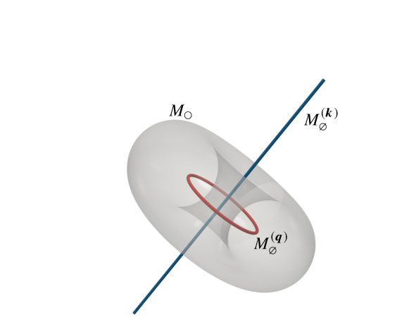
<figcaption class="paper-figure-caption"><b>Fig 5.</b> FIG. 5. Stereographic projection of the nodal manifolds 𝑀 and 𝑀∅ in class BDI. The red (𝑀(𝒒) ∅) and blue (𝑀(𝒌) ∅) lines correspond to the non-intersecting subsets of 𝑀∅that lie in the 𝒒= 0 and 𝒌= 0 planes, respectively. The gray torus represents the projection of the Clifford torus corresponding to 𝑀.</figcaption>
</figure>
</div>

<p><strong>Summary.</strong> This paper develops a generalized topological framework to characterize high-order band degeneracies (n-fold nodes) protected by Altland-Zirnbauer symmetries. It overcomes the limitations of traditional enclosing sphere methods by redefining the diagnostic tool as the linking topology between intersecting nodal manifolds in momentum space. This recasts multifold node classification into a problem of linked cycles, providing a powerful general method for topological band theory.</p>
<p><strong>Why it may be interesting.</strong> While focused on condensed matter topology, the mathematical machinery involving linking invariants in parameter space is highly relevant to characterizing complex quantum phases where standard gap arguments fail.</p>
<details>
<summary>Detailed structure</summary>
<p><strong>Main problem.</strong> The work aims to characterize generic n-fold band degeneracies whose stability relies solely on Altland-Zirnbauer (AZ) symmetries, extending beyond the standard methods used for minimal degeneracies.</p>
<p><strong>Main result.</strong> The topology of a multifold node is recast as the topology of linked nodal manifolds in momentum space, establishing a two-way correspondence between linking numbers and band invariants.</p>
<p><strong>Method.</strong> It develops a novel diagnostic by analyzing the intersection of lower-order degeneracy loci with an enclosing sphere, turning a spectral gap obstruction into a tool based on linking theory.</p>
<p><strong>Model / system.</strong> The study applies to topological band theory in systems governed by AZ symmetries, considering nodes formed by tuning parameters or synthetic dimensions.</p>
<p><strong>Key observables.</strong> Linking numbers of nodal manifolds on the enclosing sphere; topological band invariants (e.g., Chern number, winding numbers) evaluated on these nodal manifolds.</p>
<p><strong>Important parameters / regimes.</strong> The order of degeneracy ($n$), which dictates the codimension growth ($\delta \propto n^2$).</p>
<p><strong>Assumptions / limitations.</strong> The standard 'enclosing sphere paradigm' fails for $n$-fold nodes due to intersecting lower-order loci, necessitating the focus on nodal manifold linking.</p>
<p><strong>Figures summary.</strong> Figure 1 schematically illustrates the process of studying topological band invariants on the nodal manifolds ($M_1$ and $M_2$) formed by the intersection of degeneracy loci with the enclosing sphere.</p>
<p><strong>Paper structure.</strong> The paper progresses from reviewing minimal degeneracies to identifying the fundamental obstruction at higher-order nodes, proposing the linking of nodal manifolds as the diagnostic tool, and finally establishing the two-way correspondence for characterization across all ten AZ classes.</p>
</details>
<details>
<summary>Abstract</summary>
<p>Topological band degeneracies are conventionally characterized by invariants defined on enclosing spheres over which the energy spectrum remains gapped. This program has been completed for minimal degeneracies in all ten Altland-Zirnbauer (AZ) symmetry classes, whereas higher-order degeneracies have been studied almost exclusively under crystalline-symmetry protection. In this work, we characterize generic n-fold band degeneracies whose stability derives solely from AZ symmetries acting locally in momentum space. We find that their codimension grows quadratically with n, placing such multifold nodes in parameter spaces that combine physical momenta with tuning parameters or synthetic dimensions. However, the enclosing sphere paradigm faces a fundamental obstruction: two (n-1)-fold degeneracy loci intersecting at the n-fold band node pierce every enclosing sphere, implying that no uniform spectral gap (and thus no standard homotopy classification) exists. Here, we turn this obstruction into the diagnostic itself. On the nodal manifolds where the two loci intersect the enclosing sphere, complementary spectral gaps are restored, allowing us to characterize each with conventional band invariants. This enables us to establish a two-way correspondence: (1)~the multifold node is topologically protected whenever the nodal manifolds are robustly linked on the enclosing sphere, and (2)~band invariants on cycles of one nodal manifold encode their linking numbers with cycles of the other. We carry out this characterization for minimal models of all ten AZ classes, computing the band invariants wherever an explicit parametrization is available. Our results recast multifold band topology as the topology of linked nodal manifolds in momentum space, while our methods provide the foundation for a general characterization of multifold band degeneracies in models with arbitrarily many bands.</p>
</details>
<p><sub><a href="#top">↑ back to top</a></sub></p>

<p><a id="paper-2607.12997"></a></p>
<h3 id="surface-phase-field-crystal-helfrich-model-for-out-of-plane-deformations-in-thin-crystalline-sheets-with-lattice-mismatch"><a href="http://arxiv.org/abs/2607.12997v1">Surface Phase-Field-Crystal-Helfrich model for out-of-plane deformations in thin crystalline sheets with lattice mismatch</a></h3>
<p><strong>Authors:</strong> Emma Radice, Ingo Nitschke, Marco Salvalaglio, Axel Voigt<br>
<strong>Type:</strong> theory · <strong>Category:</strong> other · <strong>PDF:</strong> <a href="https://arxiv.org/pdf/2607.12997v1">https://arxiv.org/pdf/2607.12997v1</a><br>
<strong>Analysis basis:</strong> full PDF text, analyzed in chunks
<strong>Topic relevance:</strong> <code>Frenkel-Kontorova</code> <strong>1/5</strong> · <code>Keldysh / 2PI / non-Gaussian methods</code> <strong>1/5</strong></p>
<div class="figure-strip-hint">↔ Scroll figures horizontally</div>
<div class="paper-figures-scroll">
<figure class="paper-figure-card">
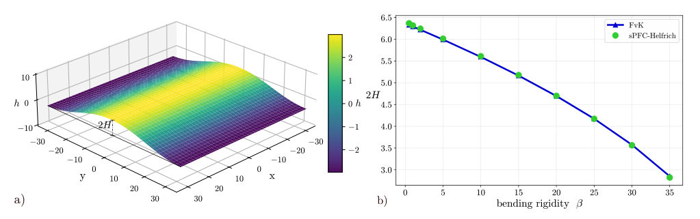
<figcaption class="paper-figure-caption"><b>Fig 1.</b> Fig. 1: Uniaxial compression. a) Height profile h for bending rigidity β = 5. b) Height difference hmax−hmin = 2H for various β together with solution for FvK equation with higher order corrections. The solutions are considered at equilibrium (t = 500, 000). We consider 40 atoms in the compression direction and use the following parameters: A = 1, B = −0.2, C = 0.5 p</figcaption>
</figure>
<figure class="paper-figure-card">
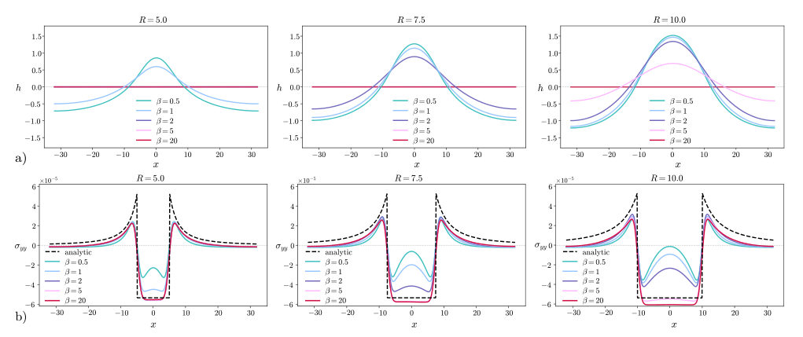
<figcaption class="paper-figure-caption"><b>Fig 2.</b> Fig. 2: Eshelby inclusion problem. a) Stress field σyy for various radii and bending rigidities. b) Corresponding height profiles h. Because upward or downward buckling simply reflects the choice of initial perturbation of the flat sheet, we present only one direction for clarity. The analytical solutions are also reported as dashed lines. Parameters are: A = 1, B = −0.2, C = 0.5 p</figcaption>
</figure>
<figure class="paper-figure-card">
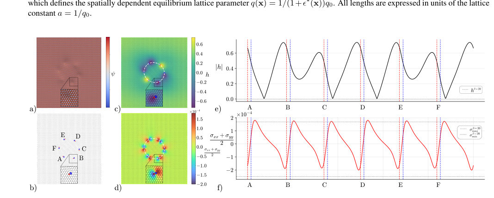
<figcaption class="paper-figure-caption"><b>Fig 3.</b> Fig. 3: Circular rotated grain. a) Periodic field ψ on the surface S after relaxation of the initial condition, allowing for defect formation and out-of-plane buckling. b) Extrema of ψ displayed on the surface S and highlighted dislocations by color coding the regions with a number of neighbors deviating from 6 (blue - 7, red - 5). c) Height profile h shown in (x, y)-plane, together with data from b) projected on (x, y)-plane. d) Hydrostatic stress (σxx + σyy)/2 together with data from b) projected on (x, y)-plane. Insets in a) – d) show zoomed-in views of the region surrounding a single dislocation. The estimated circular interface between the rotated grain and the matrix is shown as white...</figcaption>
</figure>
<figure class="paper-figure-card">
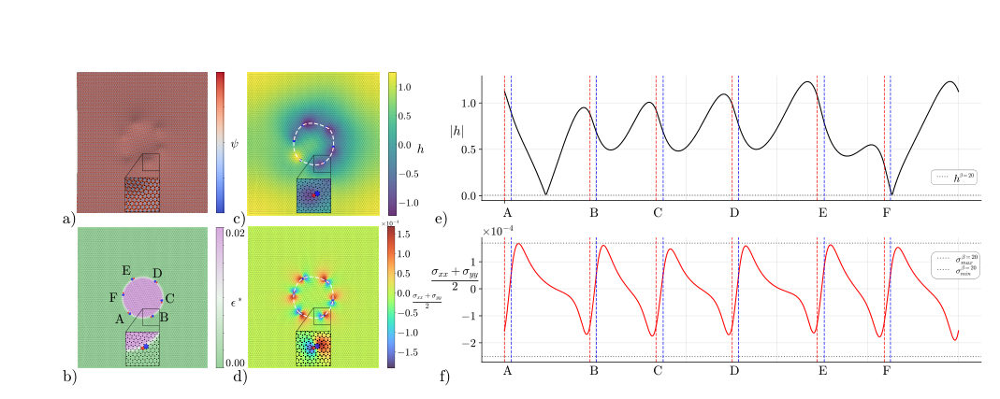
<figcaption class="paper-figure-caption"><b>Fig 4.</b> Fig. 4: Circular rotated grain with eigenstrain. a) Periodic field ψ on S after relaxation of the initial condition, allowing for defect formation and out-of-plane buckling. b) Eigenstrain ϵ∗displayed on S. Dislocations are illustrated as in figure 3. c) Height profile h(x, y), together with data from b) projected on (x, y)-plane. d) Hydrostatic stress (σxx + σyy)/2 together with data from b) projected on (x, y)-plane. Insets in a) – d) show zoomed-in views of the region surrounding a single dislocation. The estimated circular interface between the rotated grain and unrotated matrix is shown as white lines in panels c) and d). e) Absolute value of height profile |h| along the interface...</figcaption>
</figure>
<figure class="paper-figure-card">
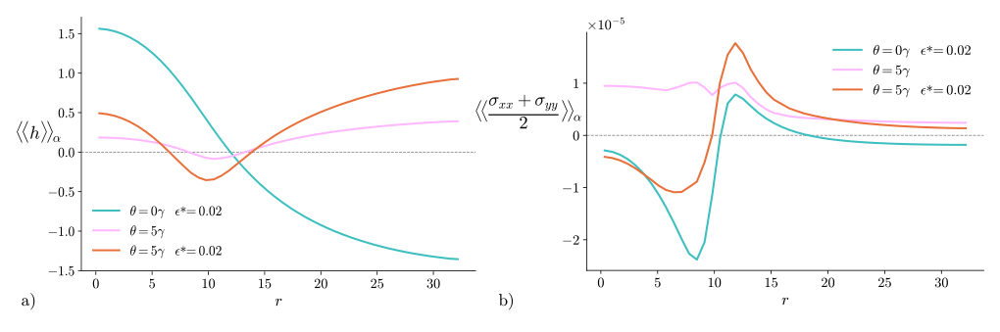
<figcaption class="paper-figure-caption"><b>Fig 5.</b> Fig. 5: Comparison between different cases. a) Radial average of height profile ⟨⟨h⟩⟩α for the three cases considered in Figures 1, 3 and 4, corresponding to (θ = 0◦, ϵ∗= 0.02), (θ = 5◦, ϵ∗= 0) and (θ = 5◦, ϵ∗= 0.02), respectively. b) Radial average of hydrostatic stress ⟨⟨σxx+σyy</figcaption>
</figure>
</div>

<p><strong>Summary.</strong> This paper develops and validates an extended Phase-Field-Crystal-Helfrich model to describe out-of-plane deformations in thin crystalline sheets. By incorporating lattice mismatch via a spatially varying lattice spacing, the authors show that mechanical stresses and structural defects interact to govern the sheet's bending behavior. The work provides a robust theoretical framework for understanding strain release mechanisms in 2D materials.</p>
<p><strong>Why it may be interesting.</strong> While focused on solid mechanics, the use of phase-field methods to describe structural evolution under stress is relevant for modeling complex interfaces or dynamic material responses in quantum materials research.</p>
<details>
<summary>Detailed structure</summary>
<p><strong>Main problem.</strong> The study addresses how out-of-plane deformations occur in thin crystalline sheets, particularly when structural imperfections like lattice mismatch are present.</p>
<p><strong>Main result.</strong> The extended model successfully predicts that locally induced compressive stresses drive out-of-plane deformation, and the interplay between lattice misfit and defects can lead to additional strain release, modifying the buckling amplitude.</p>
<p><strong>Method.</strong> The authors developed a multiscale description by extending the surface Phase-Field-Crystal-Helfrich model and validated it against analytical solutions from classical Föppl–von Kármán equations and Eshelby's inclusion problem.</p>
<p><strong>Model / system.</strong> The system is thin, flexible crystalline sheets modeled using an extended sPFC-Helfrich framework. This model couples in-plane elasticity, out-of-plane bending (Helfrich energy), and allows for spatially varying lattice spacing to incorporate localized eigenstrain mimicking lattice mismatch.</p>
<p><strong>Key observables.</strong> Height profile h(t, x, y) and its amplitude H; hydrostatic stress $\langle\langle \sigma_{xx}+\sigma_{yy} 
angle
angle_\alpha$; equilibrium lattice parameter modulation q(x).</p>
<p><strong>Important parameters / regimes.</strong> Bending rigidity ($eta$); applied uniaxial strain ($\epsilon$); lattice misfit eigenstrain ($\epsilon^*$); defect rotation angle ($    heta$).</p>
<p><strong>Assumptions / limitations.</strong> The derivation follows a general approach for $(	ext{L}^2, 	ext{H}^{-1})$ surface; future work is needed to assess dynamic processes involving time-dependent eigenstrain.</p>
<p><strong>Figures summary.</strong> Figure 1 validates the model against uniaxial compression predictions. Figure 2 compares stress fields in Eshelby inclusions across different bending rigidities. Figures 3-5 show combined effects of lattice misfit and dislocations on height profiles and stress fields.</p>
<p><strong>Paper structure.</strong> The paper first introduces the extended sPFC-Helfrich model, validates it against known analytical limits (FvK/Eshelby), and then applies it to study the interplay between lattice mismatch ($\epsilon^*$) and crystalline defects (dislocations) in inducing out-of-plane deformation.</p>
</details>
<details>
<summary>Abstract</summary>
<p>Thin, flexible crystalline sheets exhibit unique elastic properties due to their ability to undergo out-of-plane deformations. Understanding this behavior requires a description that couples in-plane elasticity, out-of-plane deformation, and their coupling, taking the crystalline structure and its defects into account. We develop a multiscale description for these systems by extending the surface Phase-Field-Crystal-Helfrich model. The extension permits a spatially varying equilibrium lattice spacing, enabling the representation of localized lattice eigenstrain to mimic lattice mismatch in heterostructures. We validate the extended model against analytical predictions from classical Föppl-von Kármán equations for uniaxial compression and from Eshelby's inclusion problem. Using this validated framework, we then show how locally induced compressive stresses drive out-of-plane deformation in the sheets.</p>
</details>
<p><sub><a href="#top">↑ back to top</a></sub></p>

<p><a id="paper-2607.12339"></a></p>
<h3 id="eigenvalue-based-approach-to-manipulate-and-reconstruct-nonlinear-pulses-towards-soliton-tomography"><a href="http://arxiv.org/abs/2607.12339v1">Eigenvalue-Based Approach to Manipulate and Reconstruct Nonlinear Pulses: Towards Soliton Tomography</a></h3>
<p><strong>Authors:</strong> Sergey Dremov, Rustam Mullyadzhanov, Andrey Gelash<br>
<strong>Type:</strong> theory · <strong>Category:</strong> other · <strong>PDF:</strong> <a href="https://arxiv.org/pdf/2607.12339v1">https://arxiv.org/pdf/2607.12339v1</a><br>
<strong>Analysis basis:</strong> full PDF text, analyzed in chunks
<strong>Topic relevance:</strong> <code>non-equilibrium dynamics</code> <strong>1/5</strong></p>
<div class="figure-strip-hint">↔ Scroll figures horizontally</div>
<div class="paper-figures-scroll">
<figure class="paper-figure-card">
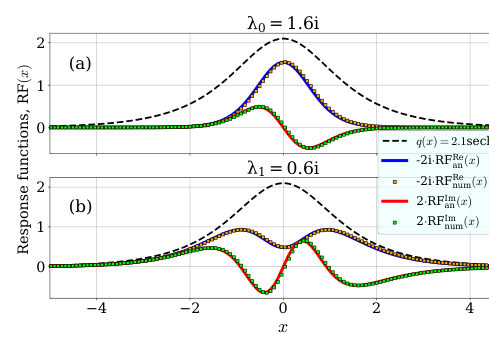
<figcaption class="paper-figure-caption"><b>Fig 1.</b> FIG. 1: Soliton eigenvalue RFs for potential q = 2.1 sech(x) (dashed line) obtained analytically via (16) and (17) (solid blue and red lines), and numerically (orange and green mark- ers). Panels (a) and (b) show the comparison for the two discrete eigenvalues of the pulse: λ0 = 1.6i and λ1 = 0.6i, respectively.</figcaption>
</figure>
<figure class="paper-figure-card">
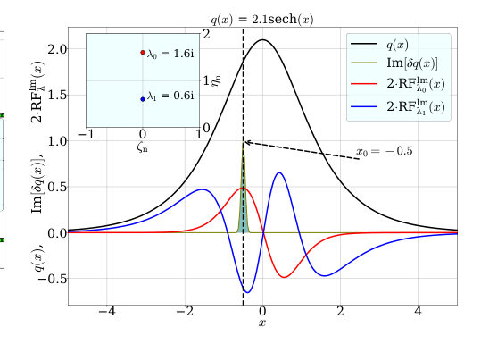
<figcaption class="paper-figure-caption"><b>Fig 2.</b> FIG. 2: Unperturbed potential q(x) = 2.1 sech(x) (solid black line) containing two solitons with λ0 = 1.6i and λ1 = 0.6i. Response functions 2 · RFIm are plotted for λ0 (red) and λ1 (blue). The Gaussian perturbation δq (olive with teal shad- ing) with a = 1.0 and σ = 0.05 is applied at x0 = −0.5 (dashed vertical line and arrow). At this point, the RFs are near their extrema and have opposite signs, suggesting a sub- sequent near-symmetric decay of the initial state to two sep- arate solitons with velocities −2δλ0 and −2δλ1, respectively.</figcaption>
</figure>
<figure class="paper-figure-card">
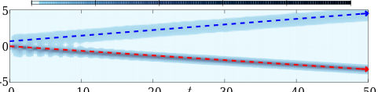
<figcaption class="paper-figure-caption"><b>Fig 3.</b> FIG. 3: The (x-t)-diagram of the SSFM simulation for po- tential q(x) = 2.1 sech(x) perturbed by the Gaussian pulse δq (a = 1.0, σ = 0.05, x0 = −0.5) under the NLSE. The pre- dicted in Fig.2 soliton decay can be clearly observed. Red and blue dashed lines indicate velocities predicted using the RFs for solitons with λ0 and λ1, respectively.</figcaption>
</figure>
<figure class="paper-figure-card">
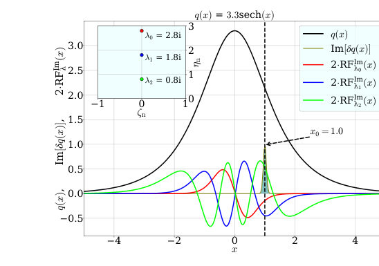
<figcaption class="paper-figure-caption"><b>Fig 4.</b> FIG. 4: Unperturbed potential q(x) = 3.3 sech(x) (solid black line) containing three solitons with λ0 = 2.8i, λ1 = 1.8i, λ2 = 0.8i. Response functions 2 · RFIm are plotted for λ0 (red), λ1 (blue), and λ2 (green). The Gaussian perturbation δq (olive with teal shading) with a = 1.0 and σ = 0.05 is applied at x0 = 1.0 (dashed vertical line and arrow). At this point, the RFs approach predicts a decay of the initial wave field to three separate solitons propagating with different velocities −2δλ0, −2δλ1, and −2δλ2, respectively.</figcaption>
</figure>
<figure class="paper-figure-card">
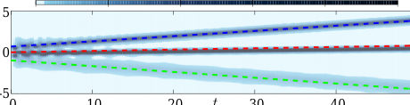
<figcaption class="paper-figure-caption"><b>Fig 5.</b> FIG. 5: The (x-t)-diagram of the SSFM simulation for po- tential q(x) = 3.3 sech(x) perturbed by the Gaussian pulse δq (a = 1.0, σ = 0.05, x0 = 1.0) under the NLSE. The predicted in Fig.4 soliton decay can be clearly observed. Red, blue and green dashed lines indicate velocities predicted using the RFs for solitons with λ0, λ1, and λ2, respectively.</figcaption>
</figure>
</div>

<p><strong>Summary.</strong> This paper introduces an eigenvalue-based method to characterize and reconstruct unknown distortions in nonlinear pulses propagating through a medium. By measuring small deviations in soliton eigenvalues, researchers can solve an inverse problem using response functions derived from the Nonlinear Schrödinger Equation. This technique paves the way for 'soliton tomography,' allowing non-invasive sensing of perturbations within complex nonlinear systems.</p>
<p><strong>Why it may be interesting.</strong> This work provides a powerful diagnostic tool—soliton tomography—that links measurable spectral properties (eigenvalue shifts) directly back to the underlying physical perturbations in nonlinear media, which is highly relevant for quantum optics and nonlinear wave physics.</p>
<details>
<summary>Detailed structure</summary>
<p><strong>Main problem.</strong> The goal is to develop a theoretical framework for manipulating and reconstructing unknown perturbations within nonlinear wave fields, specifically focusing on soliton tomography.</p>
<p><strong>Main result.</strong> The authors derived an inverse problem formulation using soliton eigenvalue response functions (RFs), demonstrating that reconstruction of complex perturbations is possible even with limited measurement data and in the presence of noise.</p>
<p><strong>Method.</strong> The approach combines perturbation theory applied to the Nonlinear Schrödinger Equation (NLSE) via the Inverse Scattering Transform, leading to a discrete linear system solved by regularization techniques like ridge regression.</p>
<p><strong>Model / system.</strong> The physical system is nonlinear wave propagation governed by the focusing one-dimensional Nonlinear Schrödinger Equation (NLSE). Solitons are characterized by conserved eigenvalues derived from the Zakharov-Shabat problem.</p>
<p><strong>Key observables.</strong> Soliton eigenvalues ($\lambda_n$), Soliton Eigenvalue Response Functions (RFs), and the reconstructed perturbation shape ($\delta q$).</p>
<p><strong>Important parameters / regimes.</strong> The regularization parameter $\alpha$, noise levels ($\delta \approx 10^{-3}$), and the number of available measurements ($M$) relative to signal points ($N$).</p>
<p><strong>Assumptions / limitations.</strong> The analysis relies on the applicability of IST perturbation theory, and for unique reconstruction, asymmetric potentials are required.</p>
<p><strong>Figures summary.</strong> Figures demonstrate the successful reconstruction of single and complex Gaussian perturbations using ridge regression, comparing results against known exact solutions.</p>
<p><strong>Paper structure.</strong> The paper develops the RF formalism analytically for sech-shaped pulses, formulates the inverse problem as an overlap integral equation, and finally applies regularization techniques to solve this ill-posed problem numerically.</p>
</details>
<details>
<summary>Abstract</summary>
<p>Soliton content of nonlinear pulses of different physical nature is universally characterized by a discrete set of eigenvalues. In an ideal channel governed by the nonlinear Schrodinger equation, the eigenvalues do not change along the wave field propagation. Perturbations leave predictable fingerprints on the eigenvalue portrait, which was recently used to manipulate optical fiber solitons in [Phys. Rev. Lett. 134, 193804, 2025]. Here, we develop a theoretical framework to manipulate and reconstruct sech-shaped nonlinear wave fields based on soliton eigenvalue response functions and the corresponding inverse problem. We derive analytical expressions to enable nonlinear manipulation of solitons by applying instant, controllable perturbations. Then we present a concept of perturbation sensing with the key feature of nonlinear propagation of the probe signal over an unknown distance, enabling the extraction of information about the perturbation source hidden within nonlinear media or materials. We introduce an integral equation for the inverse problem of reconstructing the unknown shape of the wave field distortions, when the known observational data is a function of deviations in soliton eigenvalues measured at the end of the nonlinear propagation channel. We evaluate different reconstruction regimes and demonstrate a reliable inverse problem solution in presence of noise, paving the way towards soliton tomography.</p>
</details>
<p><sub><a href="#top">↑ back to top</a></sub></p>

<hr>
<p>
<a href="index.html">← Index</a>
 · <a href="papers_06.html">← Previous</a>
</p>
<hr>

</body>
</html>
